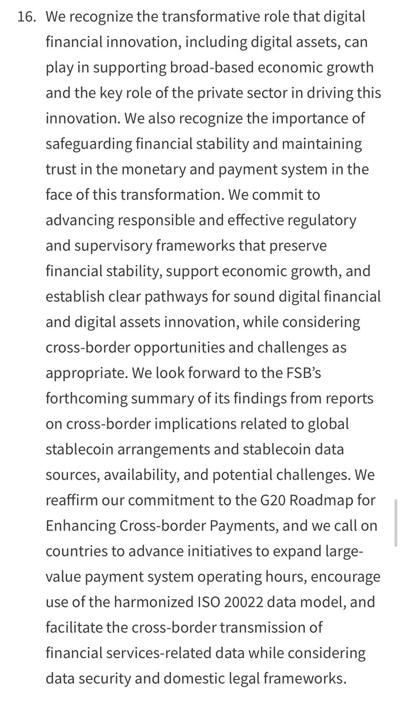
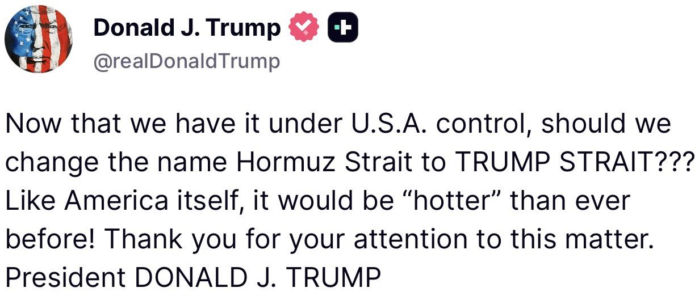
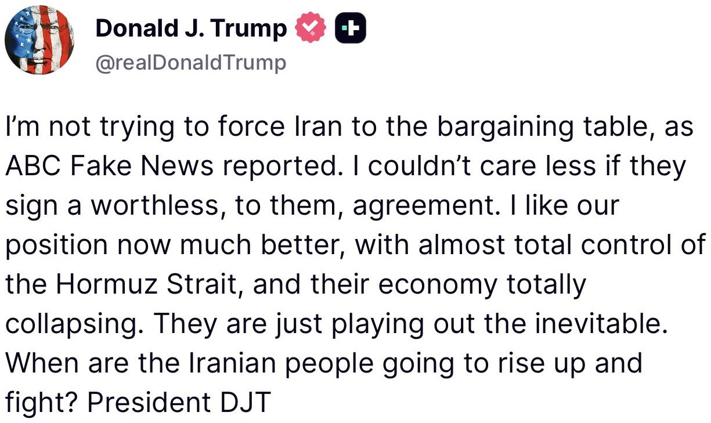
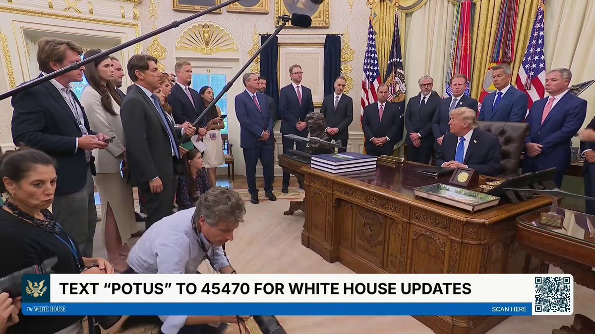
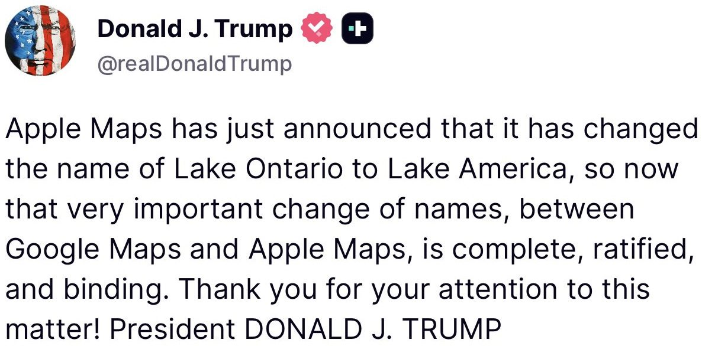

SITUATION DETECTED: The US government has sided with OpenAI against the New York Times. The DoJ says training an LLM on copyrighted works does not violate copyright law, and that treating it as infringement would hurt US science, prosperity, and national security.
Over the summer, we have been sprinting on safety priorities; it's more important than ever for capabilities and safeguards to advance together. We have more to do but have made a lot of progress. We are also going to be launching our next model soon.
There is an obvious tension here: on one hand, Astra is very good and we are excited to see what people will build with it. We are proud of our work.
On the other hand, we are clearly in a phase of development where we believe caution is warranted, and we are pacing our progress to ensure that we can meet the safety standards required by new capability levels.
Astra has been done training for a while now and is a significant step forward in both capabilities and alignment. For the models after that, we have been slowing things as needed to ensure that we can do sufficient work on safety and alignment.
AI is getting extremely capable; no one fully understands the consequences of this. Managing the transition to a world with abundant and powerful AI to optimize for safety and benefits to people should be one of the highest priorities in the world. It is our highest priority at OpenAI.
We have been living with the tension between being excited and anxious about progress for some time, and it is still discordant for us. We know it is much more discordant for other people. And yet, we believe strongly that the world needs to understand where AI is going and how models perform in the real world. More importantly, we believe the world will need aligned AI to manage the future phases of this transition.
An iterative loop where society and this technology evolve together is what will lead to the highest chance of getting this right.
So we hope you enjoy our new model, and we hope the world continues to take what’s happening in AI extremely seriously.
🚨NEW: There’s a notable nod to digital assets in the G20 Chair’s Statement released today by @SecScottBessent, with finance ministers and central bank governors from the 20 largest economies recognizing the potential of digital assets to support economic growth and committing to create “clear pathways” for responsible innovation.
The statement also calls for improvements to cross-border payments, including keeping the systems banks and central banks use to move large or time-sensitive payments open longer, encouraging wider use of ISO 20022 (a common global messaging standard used by banks), and making it easier to transmit financial services data across borders.
The group is also awaiting findings from the Financial Stability Board on the cross-border implications of global stablecoins.

Trust in official statistics underpins evidence-based policy. But how can a user know a data set they downloaded is the one the publisher released? Our new paper proposes an answer. https://t.co/ezD1w5qxJb #SDMX #OfficialStatistics
JUST IN: G20 agrees to develop clear regulatory framework for crypto and stablecoins.
ZERO Democrats showed up to our discussion on unaccompanied alien children. Again.
@RepEliCrane: "I don't really think they care much."
Children were left vulnerable to cartels, forced labor, and sexual exploitation under Biden.
Not a single Democrat bothered to show.
BREAKING: Trump Office of Legal Counsel reverses 1998 OLC opinion (by Randolph Moss) & now holds that 1996 welfare reform law PRWORA requires states to report to the federal government every time a state concludes someone is an undocumented immigrant.


NOW - U.S. Energy Secretary Wright finalizes oil agreements with interim Venezuelan president and officials.
Russian President Putin and Chinese leader Xi discussed the possibility of holding a trilateral meeting with their US counterpart Trump when China hosts the APEC summit later this year, according to Kremlin foreign policy aide Yuri Ushakov.
🇺🇸🇷🇺 Trump says he wants to do business with Russia.
“We want to have good relationships with Russia, Ukraine, with everybody.
It would be great for business. Russia has got great land, very valuable land.”

▶ Watch on X
JUST IN: Treasury Sec. Bessent blasts U.S. AI hyperscalers for doing a “terrible job” explaining the benefits of data centers & AI to the public.
Eaton Locates $242+ Million State-of-the-Art Manufacturing Facility in North Little Rock, Arkansas